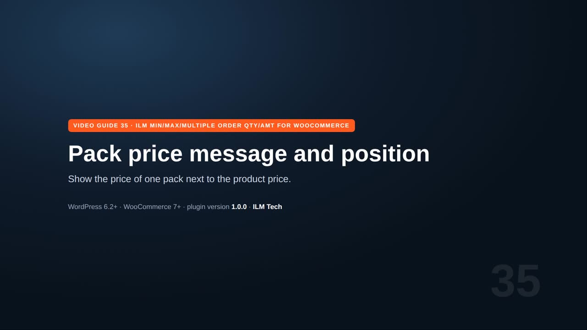
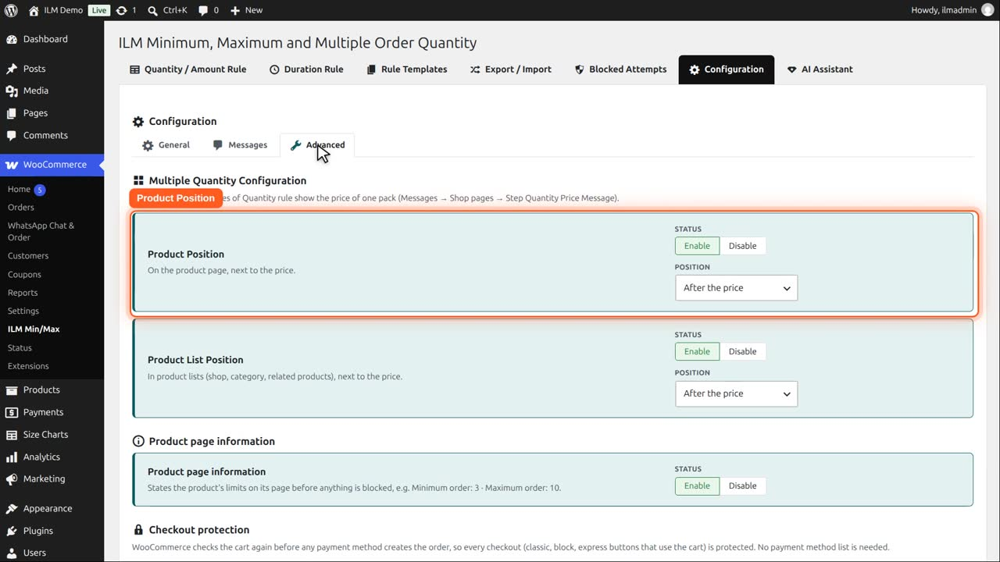
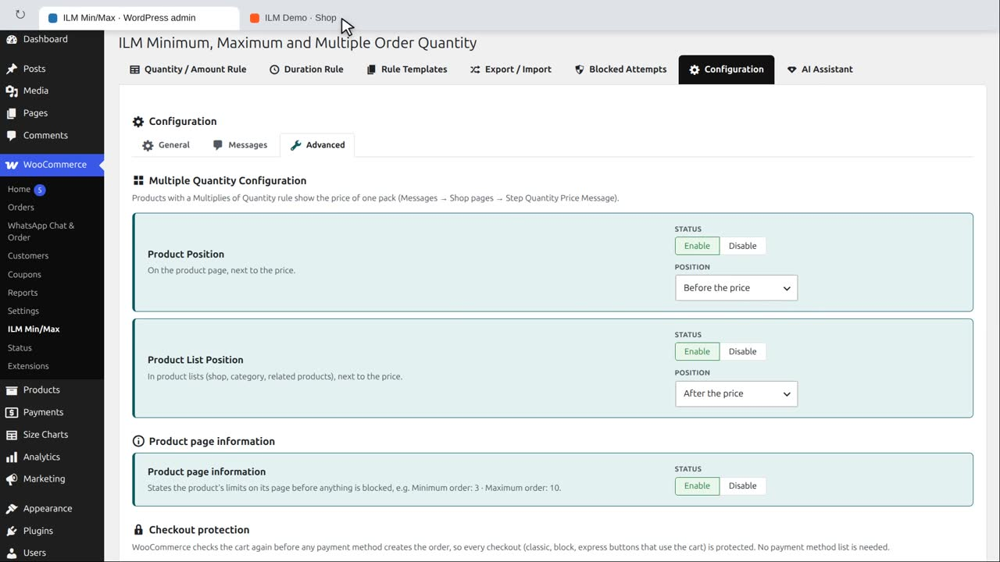
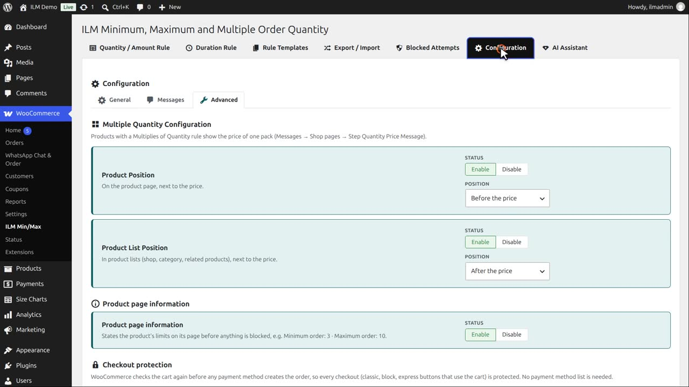
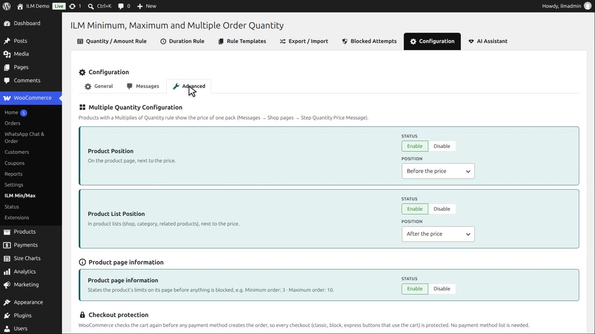

Pro add-on. This feature needs the Pro add-on. See Free and Pro.
The Mountain fox notebook is sold in packs of three, so the product page shows the price of one pack after the price.

On Configuration, Advanced, Product Position switches it on or off for the product page, and Position places it before or after the price.

We pick Before the price.

Now the pack price is shown above the price.

Product List Position does the same in the shop, category and related product lists, so customers see the pack size before they open the product. The wording itself is on the Messages tab, under Shop pages.
